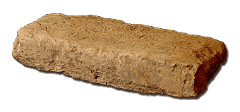
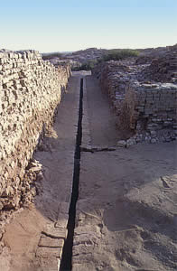

How do we know?Most of the houses found by archaeologists at Indus Valley sites are made of sun-dried brick. The floors in most of the rooms were made of beaten earth. 
Brick from Mohenjo-daro However, some rooms were paved with baked bricks. These rooms usually had drains in the floor. Archaeologists believe that these were probably bathrooms or rooms used for bathing. The waste water was carried out of the building through pipes which emptied into a long drain. The drains ran down the streets and out of town. 
Drains at Mohenjo-daro |